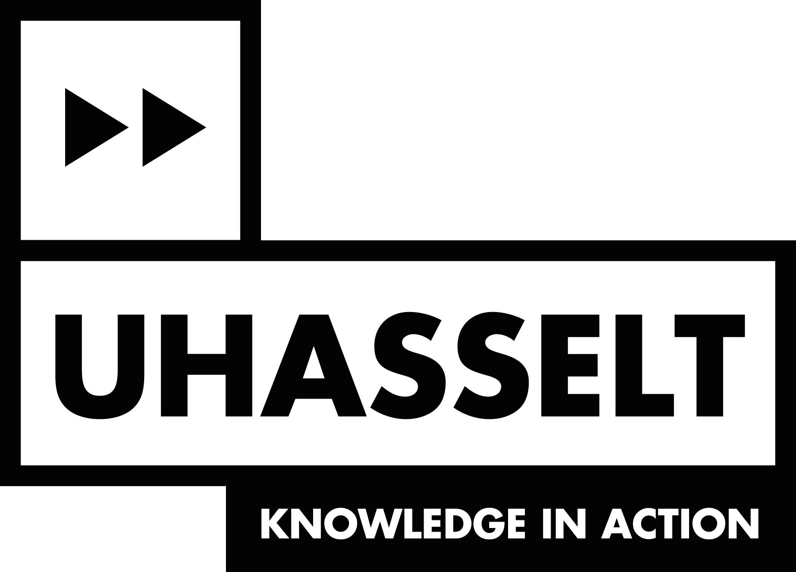
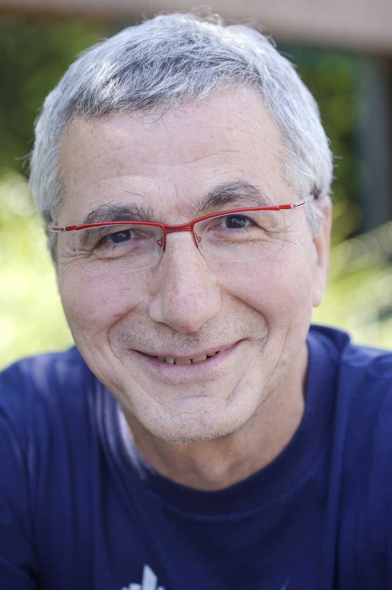

Mini-Symposium
Big Data: Science, Industry, People
Thursday 31 May 2018
Organized by
On the occassion of the honorary doctorate for Serge Abiteboul
Registration
Participation is free but we ask you to register before May 22nd. Click here
to register
Program
10:30 Opening remarks
10:45 Serge Abiteboul: Ethical Data
Analysis
11:45 Jan Aerts (KU Leuven): Visual Data
Analysis
12:30 Lunch break
13:30 Ken Andries (UHasselt): The EU General
Data Protection Regulation
14:00 Toon Calders (UAntwerpen): Fairness
Aspects of Big Data
14:45 Coffee break
15:15 Industry Round: Companies
present their activities in Big Data.
- Jonny Daenen (Selligent): Marketing automation
- Thomas Dhollander (TrendMiner): Time series analytics for
process industry
- Bart Verstrynghe (UgenTec): DNA analysis, Big Data in epidemiology
- Bart Goethals (Froomle): Recommender systems
16:15 Reception
Location
Universiteit Hasselt, Campus Diepenbeek, Agoralaan, Building D,
Auditorium H2
Location
and directions
contact: jan.vandenbussche@uhasselt.be